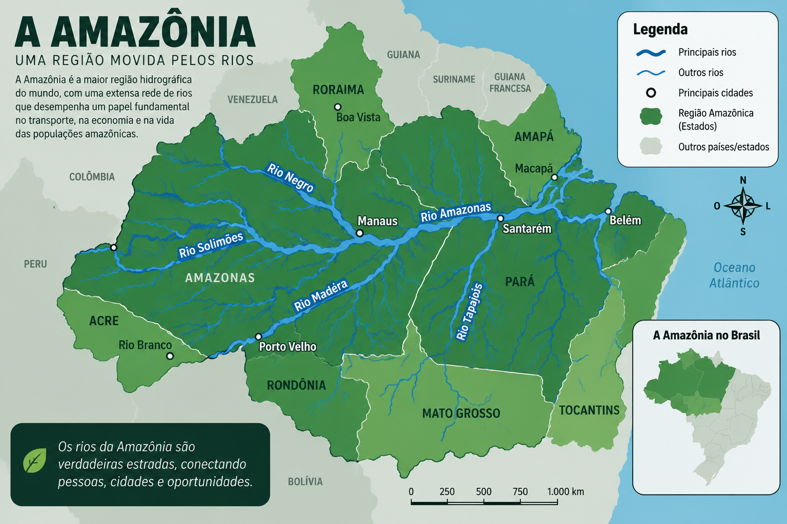

Onde os rios funcionam como verdadeiras estradas, conectando pessoas, cidades e comunidades.
Explorar o trabalhoA grande quantidade de rios e a enorme extensão territorial da Amazônia fazem do transporte fluvial uma das principais formas de deslocamento da população.
Os barcos transportam moradores, trabalhadores, estudantes e turistas entre diferentes cidades e comunidades.
Alimentos, combustíveis, materiais de construção, medicamentos e outros produtos são transportados pelos rios.
Muitas comunidades ribeirinhas dependem dos rios para chegar ao comércio, escolas, hospitais e outros serviços.
A Amazônia possui uma das maiores redes hidrográficas do planeta. Seus rios são fundamentais para o transporte e para a organização do território.

O mapa apresenta a região amazônica e sua extensa rede de rios. Esses rios possuem grande importância para a circulação de pessoas e mercadorias, principalmente em áreas onde as rodovias são escassas.
A presença de uma grande quantidade de rios permite que embarcações alcancem diferentes cidades e comunidades, tornando o transporte fluvial essencial para a integração da região.
É um dos rios mais importantes da Amazônia e possui enorme importância para a navegação. Por ele circulam passageiros e grandes quantidades de mercadorias.
O Rio Negro passa por Manaus e possui grande importância econômica e social. A navegação é fundamental para conectar a capital a várias comunidades e municípios.
O Rio Solimões atravessa uma extensa área da Amazônia e é utilizado por diferentes tipos de embarcações para transporte de pessoas e produtos.
O Rio Madeira é uma importante rota de transporte de cargas. Por ele são movimentados produtos agrícolas, combustíveis e outros materiais.
Na Amazônia, as grandes distâncias e a presença de poucas rodovias em determinadas áreas fazem com que os rios tenham um papel essencial na vida da população.
Por meio deles são transportados passageiros, alimentos, combustíveis, materiais de construção e diversos outros produtos necessários para as cidades e comunidades.
Para muitas comunidades ribeirinhas, o rio não é apenas uma rota de transporte. Ele faz parte do cotidiano e é essencial para o acesso ao comércio, à educação, à saúde e a outros serviços.
O transporte fluvial movimenta uma grande variedade de produtos necessários para a população e para a economia da região.
Existem diferentes tipos de embarcações utilizadas de acordo com a distância, a quantidade de passageiros e o tipo de carga transportada.
Embarcações pequenas e rápidas, muito utilizadas para deslocamentos entre comunidades.
Podem ser utilizadas para transporte de passageiros e deslocamentos mais rápidos.
São muito utilizados para transportar passageiros, alimentos e outras mercadorias.
Possuem grande capacidade e são utilizadas principalmente no transporte de cargas.
Milhares de pessoas vivem próximas aos rios amazônicos. Para essas populações, o transporte fluvial faz parte da rotina.
Em algumas comunidades, os barcos são utilizados para chegar às escolas.
O transporte pelos rios pode facilitar o acesso a hospitais, postos de saúde e atendimento médico.
Os rios permitem que produtos cheguem às comunidades e que moradores possam acessar centros comerciais.
Apesar de sua importância, o transporte pelos rios também enfrenta dificuldades que podem afetar a população amazônica.
Responda às perguntas sobre o transporte fluvial na Amazônia.
Responda às 5 perguntas para descobrir sua pontuação!